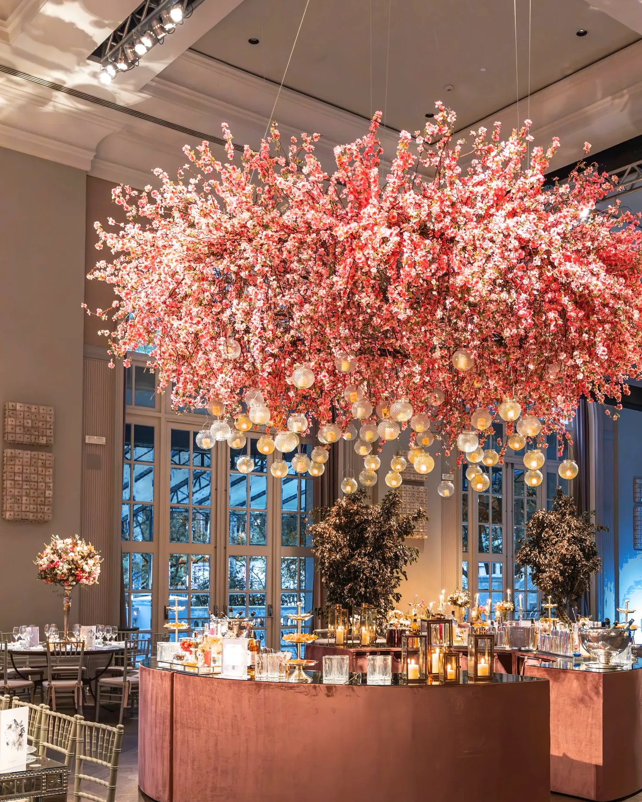

A hall with a high ceiling
hang something from it
A tall room makes people feel small unless you give them a new ceiling. I bring it down with flowers, fabric or lights, so everyone’s standing under something and the room feels full before it is.
Look up. Nobody else is.